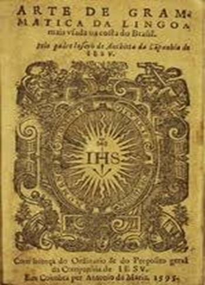
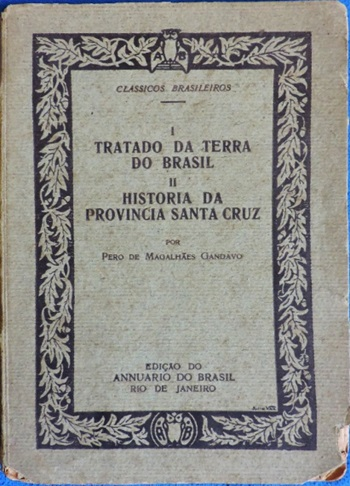
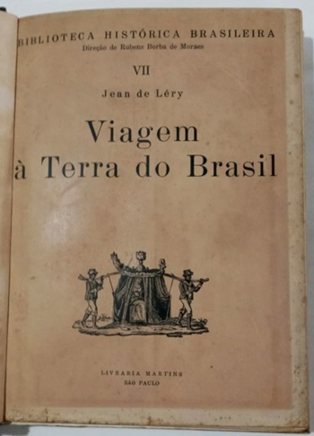
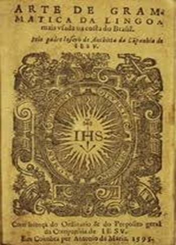
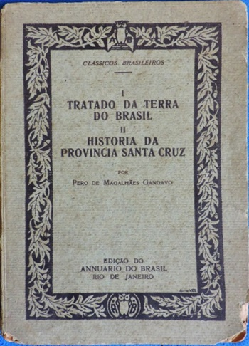
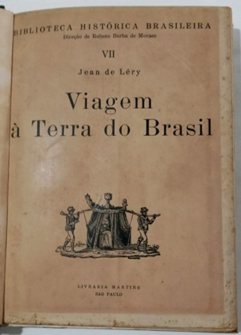
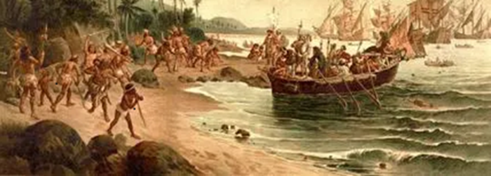

QUINHENTISMO

O Quinhentismo, que ocorreu entre 1500 e 1601, marca o início da literatura brasileira com a chegada dos portugueses.
Este período é caracterizado por textos informativos e pedagógicos, como a carta de Pero Vaz de Caminha — que descrevia as terras brasileiras para a Coroa Portuguesa. Outros exemplos incluem os escritos de José de Anchieta, que misturavam catequese e descrições das novas terras.
PRINCIPAIS CRONISTAS
Pero Vaz de Caminha: Escrivão da esquadra de Cabral, autor da Carta de Achamento do Brasil, considerada o marco inicial da literatura brasileira.
José de Anchieta: Jesuíta e defensor dos indígenas, escreveu a primeira gramática da língua tupi e obras como "Arte de Gramática da Língua mais Usada na Costa do Brasil".
Pero de Magalhães Gândavo: Autor de "História da Província de Santa Cruz" e "O Tratado da Terra do Brasil", descrevendo a fauna, flora e os povos indígenas.
Manuel da Nóbrega: Jesuíta que participou da fundação de cidades como Salvador, autor de "Informação da Terra do Brasil" e "Diálogo sobre a Conversão do Gentio".
 





CARACTERISTICAS
Crônicas de viagens ;
Textos descritivos e informativos ;
Conquista material e espiritual ;
Linguagem simples e rica em adjetivos ;
